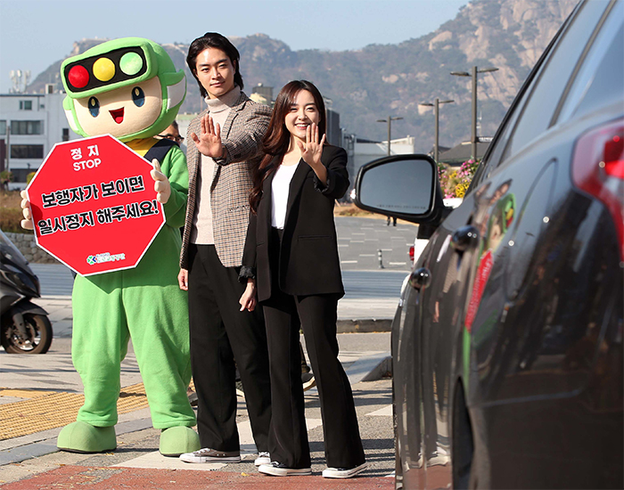
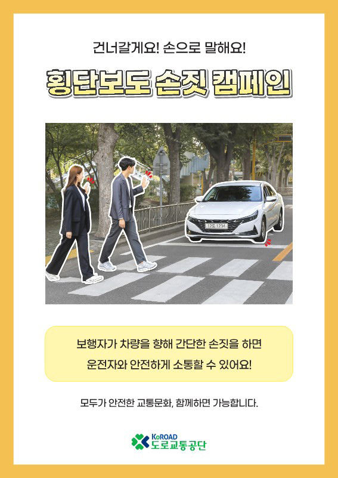
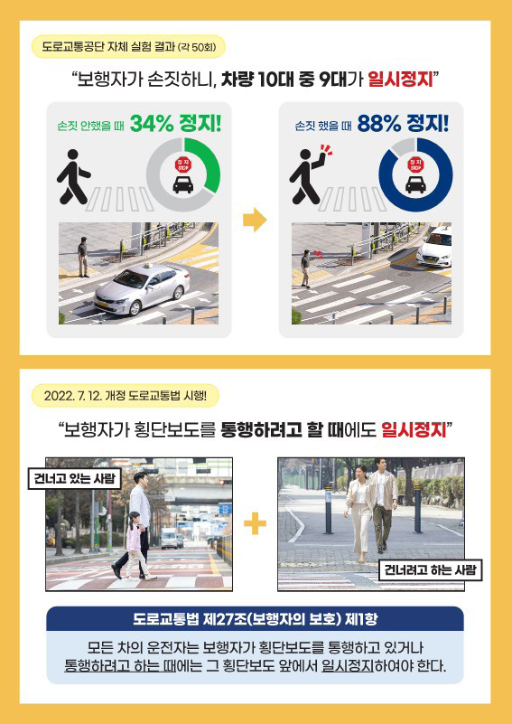

손짓만으로도 멈칫!
횡단보도 손짓 캠페인
효과적인 소통에는 비언어적 요소(보디랭귀지)가 차지하는 비율이 무려 93%에 달한다.
도로 위에서는 어떨까. 서로 대화가 어려운 운전자와 보행자 간의 새로운 소통 방법으로
‘손짓’을 사용하는 손짓 캠페인이 최근 주목받고 있다.

지난 7월 보행자 보호 의무가 강화된 개정 도로교통법에 따라 횡단보도의 풍경이 달라지고 있다. 횡단보도 앞에서 일시정지 하는 것은 물론, 우회전 차량들도 예전보다 더욱 안전운전에 주의를 기울인다. 처음에는 개정된 법에 익숙하지 않은 운전자도 많았지만, ‘횡단보도 앞 일시정지’라는 문구가 이제 상식처럼 정착되고 있는 모습이다.
그럼에도 운전 습관을 고치기란 쉽지 않은 일이다. 이에 따라 도로교통공단은 지난해부터 ‘횡단보도 손짓 캠페인’을 활발하게 펼치는 중이다. 보행자와 운전자의 비언어적 소통을 유도해 횡단보도 앞 일시정지 문화를 정착시키기 위해 마련한 캠페인이다. 보행자가 횡단보도를 건너려고 할 때 다가오는 차량이 있으면 어깨높이 정도의 가벼운 손짓으로 운전자에게 알리는 것이다.
도로교통공단은 보행자 교통사고가 일어나기 쉬운 교차로에서 도로교통공단 마스코트 호둥이와 함께 캠페인 홍보행사를 전개하고, 전국 지부 및 운전면허시험장에 캠페인 홍보물을 비치하는 등 국민들에게 적극적으로 캠페인을 알리는 중이다. 또한 디지털 네이티브 세대인 젊은 층을 겨냥한 온라인 홍보도 활발하게 추진한다. 인플루언서와 함께 영상 콘텐츠를 제작, 도로교통공단 SNS채널에 관련 콘텐츠를 업로드하며 손짓 캠페인을 정착시키기 위해 노력하고 있다.
주행도로 위에서의 손짓, 얼마나 효과가 있었을까. 도로교통공단이 지난해 8월~9월 서울시 내 주요 교차로에서 진행한 실험 결과, 도로 위에서도 비언어적 소통의 효과는 뚜렷했다.
신호등이 없는 횡단보도에 보행자가 어떤 손짓 없이 접근할 때는 운행 차량 50대 중 17대(34%)만이 횡단보도 앞에서 일시정지했다. 반면, 같은 상황에서 보행자가 운전자를 향해 가벼운 손짓을 했을 때 운행 차량 50대 중 44대(88%)가 일시정지하는 효과를 보인 것. 손짓만으로 일시정지 비율이 54%p가 증가한 셈이다.
이러한 효과는 일종의 넛지 효과로 설명할 수 있다. 넛지(nudge)는 ‘옆구리를 슬쩍 찌른다.’는 뜻으로 강요에 의하지 않고 유연하게 개입함으로써 선택을 유도하는 방법을 말한다. 대표적인 예로 네덜란드 암스테르담 스키폴 공항의 남자 화장실이 있다. 소변기 중앙에 파리 그림을 그려놓았더니 변기 밖으로 튀는 소변의 양이 80%나 줄었다는 것. 이처럼 자연스럽게 선택을 유도하는 방식은 손짓 캠페인에서도 통하고 있다. 자연스럽게 브레이크 페달을 밟게 만드는 힘은 강요가 아닌 가벼운 손짓에 있었다.
보행자 우선 교통문화. 운전자의 주의도 필요하지만, 보행자도 가벼운 손짓으로 안전한 도로교통문화 정착에 일조할 수 있지 않을까.

